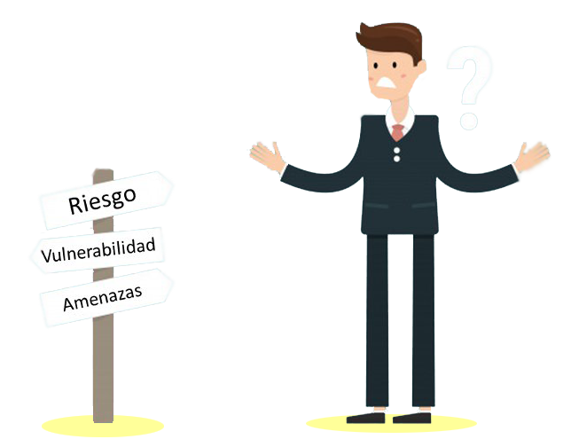

Riesgos, amenazas y vulnerabilidades
Cuando se plantea mejorar la seguridad de una empresa se debe tener en cuenta
varios factores que se muestra a continuación:
• Recursos: Se entiende a los recursos como los bienes tangibles e intangibles con los que se
cuenta para realizar las tareas, la información de que se dispone es un bien intangible,
ya sean las bases de datos de clientes, proveedores, los manuales de producción, las
investigaciones y las patentes. Por otro lado, se tiene a los bienes tangibles, qué son
los recursos físicos de que se dispone en la empresa, servidores, equipos de red,
computadoras, teléfonos inteligentes, vehículos, bienes inmuebles, etc.
• Amenazas: Las amenazas son, esos sucesos que pueden dañar los procedimientos o recursos.
• Vulnerabilidades: Son los fallos de los sistemas de seguridad o en
los propios que el usuario utiliza para desarrollar las actividades que permitirían que
una amenaza tuviese éxito a la hora de generar un problema.
• Riesgos: El riesgo es la probabilidad de que algo negativo suceda dañando los recursos
tangibles o intangibles y por tanto impidiendo desarrollar la labor profesional.
